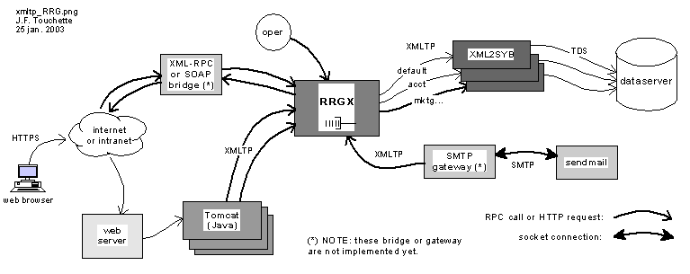

XMLTP/L - "XMLTP Light"
JF Touchette, 2006-June-12
Latest news: The 1.1 release of XMLTP/L
It's ready, you can download the 1.1.0
release.
This new version adds (optional) persistent queues based on Berkeley DB
(tested with DB version 4.3.28) and the bsddb3 Python module.
Introduction
XMLTP/L or "XMLTP Light" is a lightweight RPC protocol which uses XML
to
encode the stream of data. It has been designed to do fast RPC calls
over
an intranet,within an enterprise. More specifically, the first
purpose
of XMLTP/L is to forward transactions (RPCs) to a database server, but,
it
can be used to do method calls to any server that follows the common
RPC
technique introduced by XML-RPC and older client/server protocols.
The name "XMLTP Light" evokes the design goals and purposes of this
protocol:
- to transport "TP Light" remote
procedure
calls (RPC);
- use a XML syntax to allow compatibility with various tools,
existing
or future;
- good performance, with modest requirements (therefore, real
practical
scalability using simple hardware configurations);
- have a lightweight, robust, implementation.
To achieve its goal of being fast and "lightweight", XMLTP/L
acknowledges
the following constraints and limitations as "non-goals":
- XMLTP/L does not pretend to do everything;
- it uses a subset of XML (a full-fledge XML parser can parse
XMLTP/L,
but, not the reverse);
- is not a universal transport for all datatypes;
- is not the most "standardized" or the most buzzwords compliant
technology
to appear now, yesterday or tomorrow;
- it is not as easy to install as XML-RPC (which is less than 20 KB
of
code in the Python 2.x standard install!).
XMLTP/L is much more boring than other XML protocols such as
SOAP or
XML-RPC or any newer web services protocols that will appear
real-soon-now.
But, if it fills someone's need for a non-proprietary, robust, and
flexible
RPC protocol on their intranet, then, that would be great.
XMLTP/L should be appealing to people who use stored procedure calls,
and,
who want more flexibility (multiple DBMS), and some level of XML
compliance
without suffering response time greater than 300 or 500 ms (like all
implementations
of RPC-over-XML that I have tried so far... I have not tried all of
them,
but, enough to convince me to write a custom XML subset parser in "C").
XMLTP/L is distributed as source code (see Download) and is licensed
under
the GNU Library General Public License (GNU LGPL)

[ click on image to see larger one ]
On the schema above you can see a small box called "XML-RPC or
SOAP
bridge". This does not exist yet. But, it would be rather easy to
create such
a "bridge" as the initial specs are similar to those of XML-RPC. Also,
there
is a single "dataserver". Actually, it is possible to put two or many
behind
the RRGX, which does "RPC Routing".
Is this interesting? If so, read on...
Technical Specifications
XMLTP/L is a simple XML based protocol, and, it only supports (4) four
datatypes
in the RPC parameters and in the tabular result set(s) which can be
returned
by the stored procedures. These datatypes are:
- integer : 32 bits, most likely (Python allows for larger int,
but XML2SYB uses ANSI "C" 32 bits int on GNU/Linux on x386)
- float : double precision, most likely
- timestamp : "YYYY-MM-DD HH:MM:SS.mmm"
- string : with a maximum of 255 characters.
A value of any of these types can be flagged as "Null". In
which
case, the data that is associated to that value should be sent empty by
the
"server", and, it should be ignored by the "client".
If we look at all the details, a XMLTP/L response contains:
- a "return status" (always),
- one or many result set(s) (optional),
- messages(s) (optional),
- output parameter(s) (optional).
A main design goal of XMLTP/L was to pump a high volume of transactions
in
and out of a relational database. We wanted some level of "vendor
independance",
specifically to suffer less from the vendor's frequent upgrades to its
native
client-server API. Also, we wanted to be able to mix datasources and
perform
RPC routing in a way that would be invisible ("transparent") to the web
app
server (or to other XMLTP/L clients connected to the RRGX).
XMLTP/L acts like a universal database RPC protocol. The whole intranet
can
use XMLTP/L for RPC calls, and, vendors' proprietary protocols can be
isolated
on a server near the database itself. The "RRGX" allows to integrate
multiple
database servers together like if it was a single server. (Please
note
that XMLTP/L does not automate synchronisation of transactions on
multiple
dataservers: each RPC is independent of all other calls).
The "RRGX" -- "RPC Router Gateway for
XMLTP/L"
does not use any proprietary client/server API. This RRGX allow to call
procedures
in multiple database servers as it routes the RPCs to the various
"converter"
programs according to the names of the procedures.
The RRGX needs one "converter" per database protocol. Such "converter"
programs
are external programs and they can be built from the vendor's API libs
and
the the XMLTP/L modules. Currently, XML2SYB, "XML to Sybase", is
already
implemented.
Note that it is also possible to code "stored procedured" in Python in
a server
similar to the RRGX (which is derived from the generic "gxserver.py"
module).
There are many other small features in the RRGX that makes it very
useful
in a real production environment:
- log of events and messages (error, warning, trace & debug)
- dynamically adjustable trace level
- built-in operator commands like: ps, who, stats...
- gates which can be closed while maintenance is done on the
database(s)
behind the gateway:
- RPC gate (global)
- connection pools gates
- connection gate (global)
- application specific gates (one gate for a list of RPC names).
- when a gate is closed, a user-defined message can be sent back
to the clients
- RPC result interceptions (with passive queueing or active
re-forwarding).
Limitations, Trade-offs and Advantages
The choice of only four simple datatypes shows that XMLTP/L does NOT
attemp
to solve any of the needs typical of multimedia
applications. It would probably be quite easy to support a BLOB (Binary
Large
Object) datatype, but, this is not a priority at this moment.
Another limitation in this first implementation, is that the currently
supported
character set is "ISO-8859-1" (Latin European languages). Yet, the fact
that
this is a simple protocol (and the fact that the source code is
available
under the GNU LGPL license) should encourage developpers to adapt it to
their
own cultural needs.
The XML syntax used is much more compact than the one used by XML-RPC
(as
it was in August 2001, when we started designing and building XMLTP/L).
A
typical RPC call stream or result stream is about twice smaller when it
is
encoded with XMLTP/L. This is because the tags in XMLTP/L are smaller
and
fewer.
Technical Details about the Current Implementation
We used four languages (GNU Bison, ANSI C, Python and Java) to do the
current
implementation. At this time, XMLTP/L can be used by programs written
in
three languages (Python, C, Java).
The main building blocks of the implementation are:
- a grammar suitable for GNU Bison (in other words, a "Yacc" .y
source
file). This grammar is done in a way that allows to do a multithread
parser.
- a C/Python module which does parsing in a multithreaded way.
That "xmltp_gx.so"
module allows to write both client and server programs in Python.
Furthermore,
it is currently used to build a "gateway" server, gxserver.py, which
routes
RPC (according to their names). The gateway gxserver.py (or RRGX) has
many
other features (like operator commands, RPC "gates") which are fully
not
described here.
- a C program, XML2SYB, which convert back and forth between
XMLTP/L
RPC calls to native Sybase RPC calls (TDS protocol). XML2SYB acts as a
XMLTP/L
server.
- a Java JDBC driver (client side of XMLTP/L) suitable for use
with Tomcat
web apps, or other Java programs.
Download
NOTE: the JDBC driver for XMLTP/L is not available here at this time
(June 2006)
Latest source "tarballs":
Some users told us that gxserver was so
stable that we might as well start to call it a 1.0 version.
This .tgz contains a few improvements in some *.py modules and a
xmltp_gram.y grammar file that is compatible with the newer versions of
Bison, such as 1.875
Also, there is now a database emulation tool, "xmlfisrv", which allows to call a
"stored procedure" which, actually, would be a file containing a
response coded in XML (in XMLTP, more precisely).
Because "xmlfisrv.c" does not depend on any proprietary database header
file to compile, nor on a database server to connect to, xmlfisrv is
very useful for unit testing, demo or
prototyping.
See the files README and INSTALL in the .tgz for more details.
License
XMLTP/L source code is licensed under the GNU Library General Public
License
(GNU LGPL). See the file "LICENSE" in the source tarball.
Documentation
These documents are available now:
We need to write more documentations on the more detailed subjects. If
you
have specific interests for documentation. Please tell us.
News
2006.6.12: "xmltp_src.1.1.0.tgz" - version 1.1.0 with (optional)
persistent queues, using Berkeley DB 4.3.28, and bsddb3.
2004.11.7: "xmltp_src.1.0.0.tgz"
2004.2.17 : "xmltp_src.0.3.3.tgz"
2004.2.16 : "xmltp_src.0.3.2.tgz"
2004.1.29 : "xmltp_src.0.3.1.tgz"
2003.9.29 : "xmltp_src.0.3.0.tgz"
2003.9.24 : added this "News" section, added "Documentation" section,
with
link to "XMLTP/L Specifications"
2003.3.15 : added link to "xmltp_src_012_2003feb28.tgz"
2003.1.25-29: first version.
Contacts & Credits
The following mail addresses are human readabe only to try to reduce
the probability
of automated collecting by mail spammers:
- jft -- JF Touchette -- XMLTP/L parser , RRGX and related
Python
modules
All these addresses are at this domain (xmltp-l.org).
NOTES
(1) "TP Light": "TP Light" is
doing "light"
OLTP (On-Line Transaction Processing) by using RPCs to call procedures
stored
in a SQL database (this could be a Sybase, Oracle, IBM DB2, or, any
other
DBMS which can do that).
References:
Robert Orfali, Dan Harkey & Jeri Edwards: "Essential Client/Server
Survival
Guide". New York, John Wiley & Sons, Inc., 1994.
"Scale Up with TP Monitors" in BYTE, April 1995, pages 123-128.
(2) A Very Brief
History of
Client/Server RPC calls:
Sending remote procedure calls RPC to a database is an efficient way to
retrieve
data and separate tasks, both between developpers, and, between
servers: app
server(s), data server(s). In the mid-90s, RPCs were "in". That was the
time
when "fat clients" were still the "cool thing".
The fat clients have been dethroned by the thin ones since that time,
but,
many entreprises still successfully leverage RPCs stricly on the server
side.
(new webhosting since 2004-1-18)
***